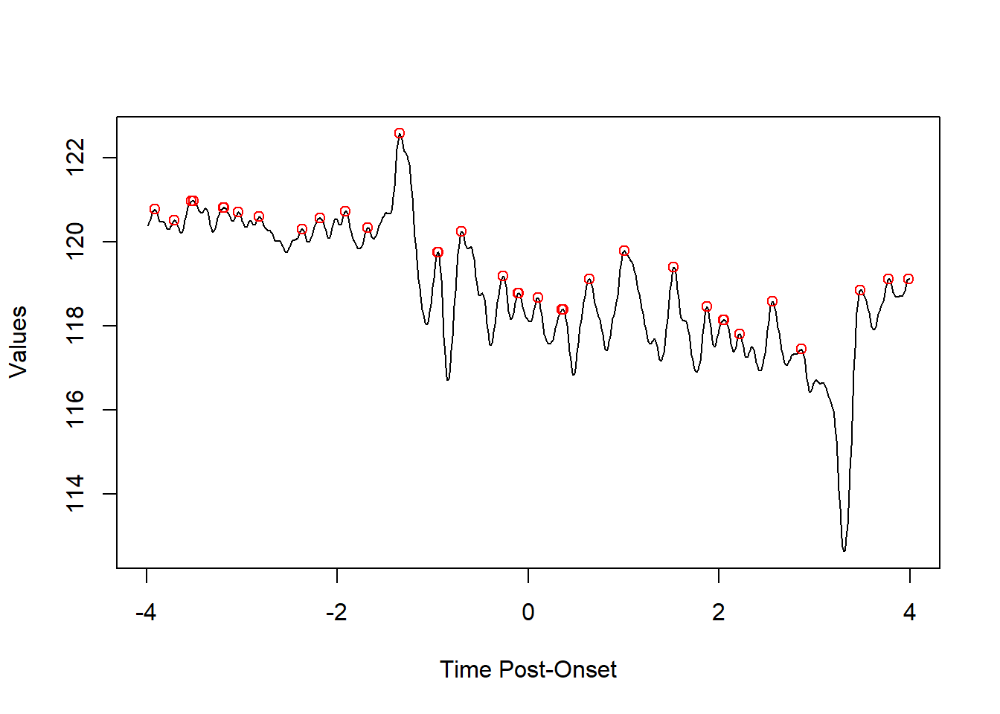
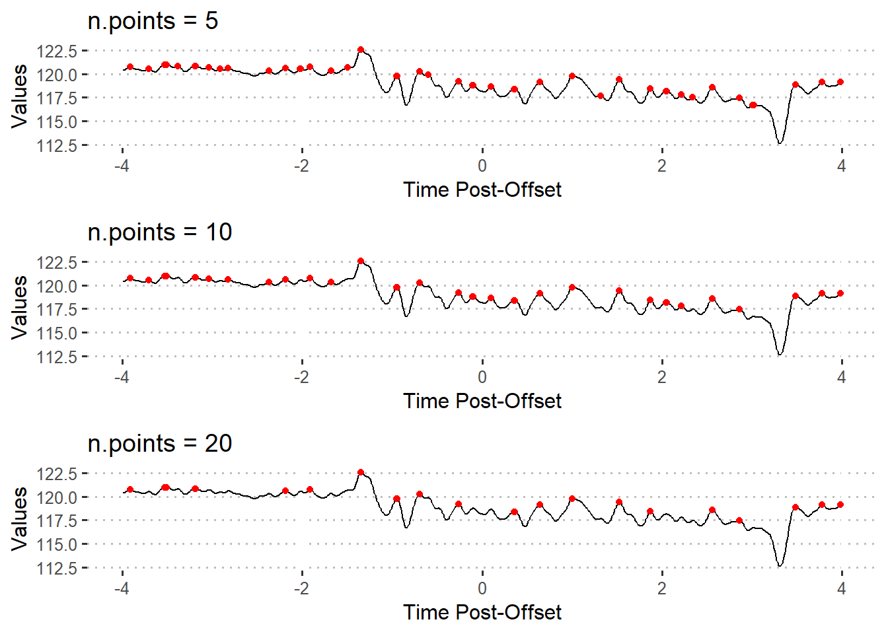
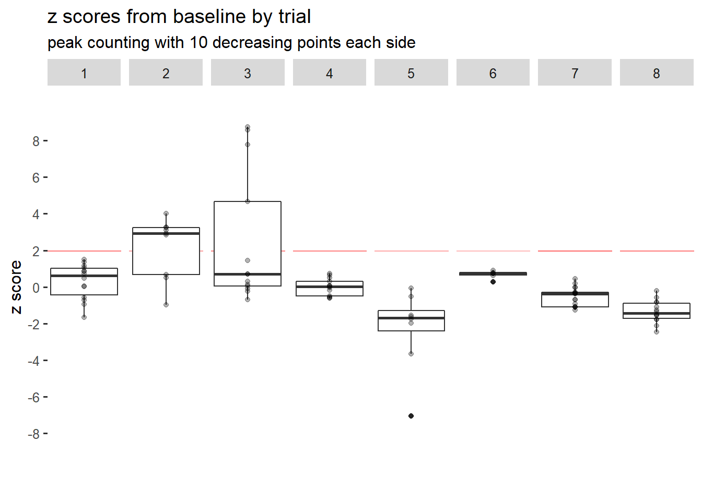
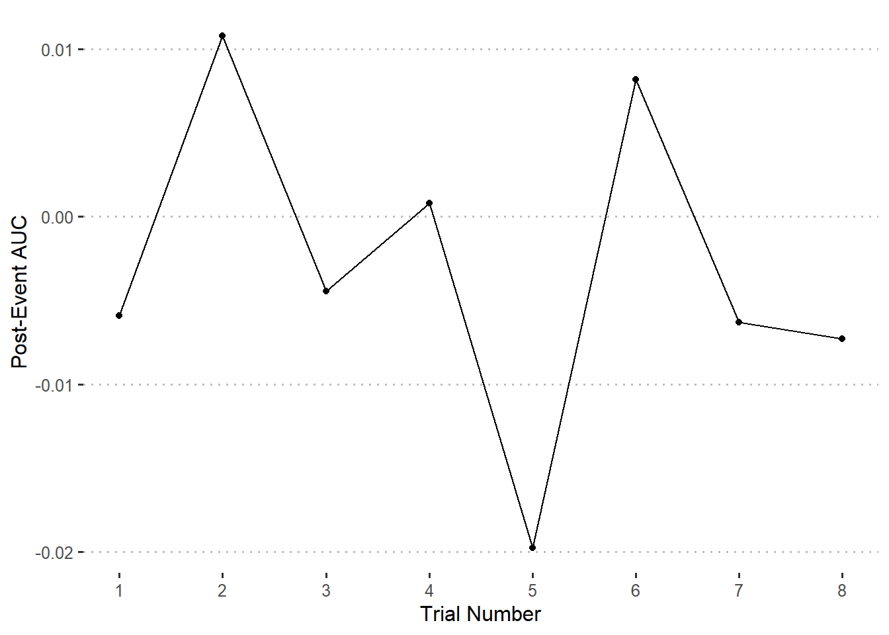
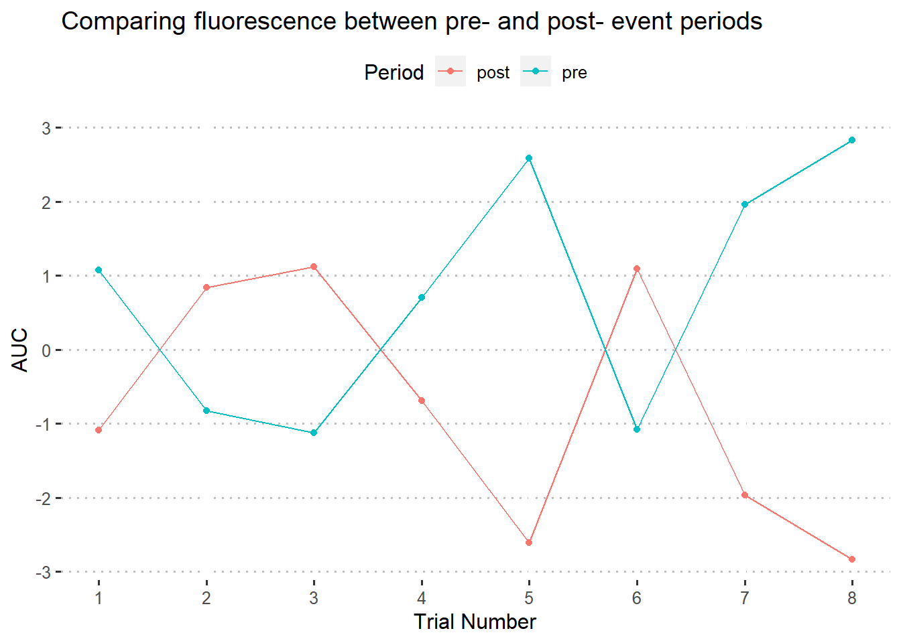
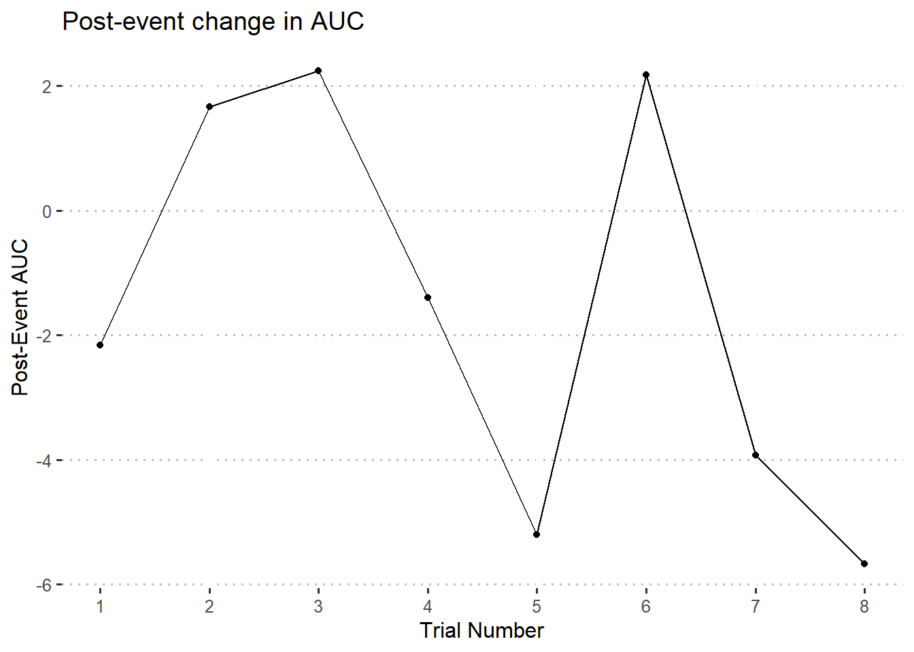

Chapter 5 Analysis
library(fluoR)
library(ggplot2)
library(ggpubr)
library(cowplot)
theme_set(theme_pubclean())
df <- format_data(GCaMP)5.1 Metrics
5.1.1 Peaks
Because of R’s relative ease in subsetting data, I did not include a z-score filter in any of the functions.
5.1.1.1 peak/valley finding
find_peaks from the fluoR package lets the user find peaks and valleys using a vector of numbers.
The n.points parameter is used to determine how many decreasing/increasing points on each side of a peak/valley are required for the point to be considered a peak or valley.
5.1.1.1.1 peaks
Using a positive value for find_peaks will return peaks

5.1.1.2 adjusting sensitivity
The n.points parameter can be changed to prevent returning false positives.
pks5 <- find_peaks(xvals = df$Trial8, n.points = 5)
pks10 <- find_peaks(xvals = df$Trial8, n.points = 10)
pks20 <- find_peaks(xvals = df$Trial8, n.points = 20)n.points = 5returns the indices for 44 peaksn.points = 10returns the indices for 34 peaksn.points = 20returns the indices for 23 peaks

5.1.1.3 distance between peaks
fluoR’s distance_between_peaks function was written to extract values at each peak and between peaks for a single trial. This was inspired by the survival regression analysis done by (Gunaydin et al. 2014).
peak.dist <- distance_between_peaks(dataframe = df,
trial = 8,
time.range = c(-4,4),
n.points = 8)
head(peak.dist)## index.start index.stop index.distance peak.diff.time peak1.intensity
## 1 9 30 21 0.2064 120.77
## 2 30 48 18 0.1770 120.51
## 3 48 50 2 0.0196 120.96
## 4 50 63 13 0.1278 120.96
## 5 63 82 19 0.1868 120.80
## 6 82 83 1 0.0098 120.81
## peak2.intensity peak.diff.intensity
## 1 120.51 -0.26
## 2 120.96 0.45
## 3 120.96 0.00
## 4 120.80 -0.16
## 5 120.81 0.01
## 6 120.81 0.00The variables returned are useful for both graphing and analysis.
index.startandindex.stopfor indexing in reference to the original dataframeindex.distancefor discrete counts, regardless of how frequently data points are recordedpeak.diff.timefor the time between each pair of peakspeak1.intensityandpeak2.intensityfor the values each peak is located at (think counting peaks above a specific z score)peak.diff.intensityfor finding continuous increases or decreases in peak fluorescence signal over time
5.1.2 Area under curve
One may decide that it is best to capture the full area underneath a curve. Area under curve (AUC) allows us to combine x (Time) and y (Intensity) variables into one value.
There are three important points one should consider before using AUC as a metric for statistical comparisons: - the length for each time period being compared should be equal (e.g. 2s pre-onset vs. 2s post-onset) - the values should be standardized or centered within each trial (e.g. z-scores from baseline) - computing the AUC includes negative values, which can result in a negative value and is moderately affected by large outliers
fluoR includes the function auc.pre to quickly calculate the AUC for a range of trials during a specified period of time. As an example of how this can be used, let’s compare full pre-trial and post-trial periods for trials 1-4.
### Pre-onset
auc.pre <- auc_trials(dataframe = df, trials = 1:4,
time.range = c(-4,0))
### Post-onset
auc.post <- auc_trials(dataframe = df, trials = 1:4,
time.range = c(0,4))
head(auc.pre)## Trial1 Trial2 Trial3 Trial4
## 328.5656 329.6170 325.8933 361.4260## Trial1 Trial2 Trial3 Trial4
## 328.5480 331.3686 329.9789 361.0577The function returns a named vector for each trial’s AUC so we can compare AUC values within and between trials.
5.2 Applications
5.2.1 Number of peaks above z score
Regardless of the periods of time being compared, the first step of using this metric is to determine which peaks are significant. We can do this by using the n.points parameter with the distance_between_peaks function and a set number z-score cutoff. The idea is to make the best combination to represent measured behaviors without excessively skewing the data toward significant or non-significant results.
- judging by word of mouth from other researchers, “significant” peaks tend to be standard z scores of 1.96 and over. But this is not a strict cutoff. It can also be raised to avoid false positives.
- the
n.pointsstep is a bit trickier and may require adjusting the parameter.
Note that this approach does not specifically represent increases in activity per wave. In other words, it quantifies peak points of fluorescence, not the amount of increase in fluorescence from the preceding valley.
5.2.1.1 Example 1
We first need to standardize the data so that the intensity values represent standard deviations from the baseline mean.
# transform to z-scores using pre-event period as baseline
df.stand <- baseline_transform(dataframe = df, trials = 1:8,
baseline.times = c(-4,0)) Then, we need to determine criteria for the peaks. Here, we can use the following:
- peak (inflection) points 1.96 z scores and above
- peaks must have 10 data points decreasing on each side to be considered “significant”
To apply this method, is easiest to apply the distance_between_peaks function across trials using a loop. I plan to change this function in the future for automatic compatibility with multiple trials.
big.list <- list() # holding list
trial.range <- 1:8
### Loop across trials
for(i in trial.range){
## find peaks
df.pks <- distance_between_peaks(dataframe = df.stand, trial = i,
time.range = c(0,4),
n.points = 10)
## specify trial number
## add if-else statement incase 0 peaks are returned
if(nrow(df.pks) > 0){
df.pks$trial <- i
}
## add to list
big.list[[i]] <- df.pks
}
### Combine list of data frames
df.peaks <- do.call(rbind, big.list)Now we have our data frame of information on peaks with 10 decreasing points on each side.

It seems like only trials 2 and 3 had any post-event z scores above 1.96. Therefore, the fluorescence signal likely did not spike or increase for a significant number of times past baseline for 6 of 8 trials.
We can get the specific number of peaks that filled the z-score criteria as well. The dplyr package has a few functions that let us quickly compute counts by group.
library(dplyr)
### Filter based on z score cutoff
df.peaks.filt <- df.peaks %>%
filter(peak1.intensity > 1.96 | peak2.intensity > 1.96)
### Count values per trial
total.peaks <- df.peaks.filt %>%
group_by(trial) %>%
tally()
print(total.peaks)## # A tibble: 2 x 2
## trial n
## <int> <int>
## 1 2 7
## 2 3 5Indeed, trials 2 and 3 were the only trials with fluorescence peaks above 1.96 that had 10 decreasing points on each side.
5.2.2 Distance between peaks
In the context of recording neural activity, measuring the average distance or time between peaks is representative of how frequently significant spikes in activity occur.
5.2.2.1 Example 1
Compare the time between post-event activity peaks for trials 1-8
The first steps for using the distance between peaks are actually the same as Example 1 from z-score peak counting, so we will use the df.peaks.filt dataframe from there. Recall that we have already:
- changed the data to represent standard deviations from baseline (baseline z-scores)
- filtered peaks based on the criteria of z > 1.96 and n.points = 10
- found that only trials 2 and 3 had any fluorescence peaks above 1.96
Conveniently, this dataframe already has all of the information we need.
mean.time.bet.peaks <- df.peaks.filt %>%
group_by(trial) %>%
summarize(time.bet.peaks = mean(peak.diff.time))
print(mean.time.bet.peaks)## # A tibble: 2 x 2
## trial time.bet.peaks
## <int> <dbl>
## 1 2 0.399
## 2 3 0.297Trial 2 has an average time of about 0.399 seconds between significant peaks, while trial 3 has about 0.297 seconds between them.
5.2.3 Area under curve
5.2.3.1 Example 1
Compare the post-event AUC for trials 1-8
For comparing between trials during the same time period after or before an event, it is appropriate to standardize the data from a baseline point before computing the AUC.
### Format & standardize data
df <- format_data(GCaMP)
df.stand <- baseline_transform(dataframe = df, trials = 1:8,
baseline.times = c(0,4),
type = 'z_standard')### Compute AUC values and create new data frame
auc.post <- auc_trials(dataframe = df.stand, trials = 1:8,
time.range = c(0,4))
auc.postdf <- data.frame(
Trial = 1:8,
Value = auc.post
)### Graphing
ggplot(auc.postdf) +
geom_point(aes(x = Trial, y = Value)) +
geom_line(aes(x = Trial, y = Value)) +
scale_x_continuous(breaks = 1:8) +
labs(
x = 'Trial Number',
y = 'Post-Event AUC'
)
5.2.3.2 Example 2
Compare pre- vs. post- event activity for trials 1-8
This is a bit tricker. If you are comparing a baseine period to a post-event period, it will likely no longer be appropriate to use baseline deviations in transforming values for the full time series - at least when using the AUC.
This is because fluctuations in fluorescence on one side of the event (baseline) will be around the same, while post-event deviations from the norm will be exaggerated; causing a higher AUC.
With that in mind, let’s do a typical z-score transformation for this data. Since each trial is measured for 4 seconds before event onset and 4 seconds after, baseline_transform for the full 8-second period will result in the same thing as manually calculating z-scores for each trial.
### Format & standardize data
df <- format_data(GCaMP)
df.stand <- fluoR::baseline_transform(dataframe = df,
trials = 1:8,
baseline.times = c(-4,4), # or min-max timestamps
type = 'z_standard')### Compute AUC values and create new data frame
auc.pre <- auc_trials(dataframe = df.stand, trials = 1:8,
time.range = c(-4,0))
auc.post <- auc_trials(dataframe = df.stand, trials = 1:8,
time.range = c(0,4))
auc.df <- data.frame(
Trial = rep(1:8, times = 2),
Value = c(auc.pre, auc.post), # 8 values pre & 8 values post
Period = rep(c('pre', 'post'), each = 8)
)We could graph some form of line or bar graph comparison
### Graphing
ggplot(auc.df) +
geom_point(aes(x = Trial, y = Value,
color = Period, group = Period)) +
geom_line(aes(x = Trial, y = Value,
color = Period, group = Period)) +
scale_x_continuous(breaks = 1:8) +
labs(
x = 'Trial Number',
y = 'AUC',
title = "Comparing fluorescence between pre- and post- event periods"
)
Or we could subtract the values and graph the difference between pre- and post- trial AUC values. In other words, how much higher or lower is the post-trial AUC than the pre-trial AUC?
auc.diff <- auc.post - auc.pre
auc.diffdf <- data.frame(
Trial = 1:8,
Value = auc.diff # 8 values pre & 8 values post
)### Graphing
ggplot(auc.diffdf) +
geom_point(aes(x = Trial, y = Value)) +
geom_line(aes(x = Trial, y = Value)) +
scale_x_continuous(breaks = 1:8) +
labs(
x = 'Trial Number',
y = 'Post-Event AUC',
title = 'Post-event change in AUC'
)
On the other hand, it should still be okay to center at the baseline mean or median for interpretation purposes. This is because it is assumed that, after centering at baseline, the base line will hover around 0. Waves alternating above or below the 0-point on the y axis will mostly cancel each other out.
References
Gunaydin, Lisa A., Logan Grosenick, Joel C. Finkelstein, Isaac V. Kauvar, Lief E. Fenno, Avishek Adhikari, Stephan Lammel, et al. 2014. “Natural Neural Projection Dynamics Underlying Social Behavior.” Cell 157 (7): 1535–51. https://doi.org/10.1016/j.cell.2014.05.017.